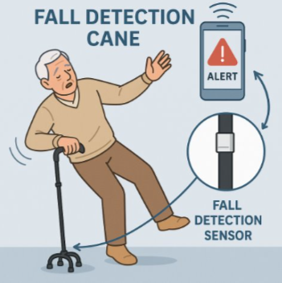

UA TOM
[Univesity of Alabama Tikkun Olam Makers]
Tikkun Olam Makers University of Alabama Chapter, is a student organization dedicated to engineering
low-cost, open-source assistive devices, has garnered global recognition for its innovative approach to
accessible technology.
Rise Project
We are currently collaborating with educators at a the Rise Center, Tuscaloosa to design an interactive educational game for children with varying abilities.
I’m using SolidWorks to create 3D-printable components that make learning more engaging and hands-on for students.

Fall Detection Device
Currently collaborating with a multidisciplinary team to design and develop a wearable fall detection device for older adults.
The prototype will use an Arduino with built-in motion sensors to detect sudden impacts and abnormal movement patterns.
I’m working on integrating the Arduino with additional hardware components and contributing to the ongoing embedded system design and testing.